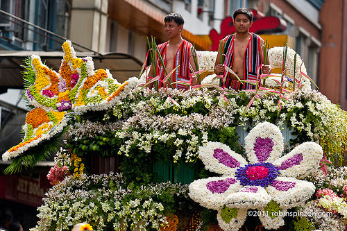

Schedule of Events and Activities
Baguio City's grandest and most attended flower festival is set to happen the whole of February 2016. Panagbenga Festival also known as "Baguio Flower Festival" is to celebrate not only the "season of blooming" of flowers but also the booming economy and progress of the City of Baguio.
Several events and activities are lined up for the Panagbenga Festival 2016 including the Grand Street Dancing Parade, Drum and Lyre Band Competition, Baguio Blooms Exhibition and the much-awaited Grand Flower Float Parade!
Baguio Blooms Exhibition and Exposition
Lake Drive, Burnham Park
February 18, 2016
Floral Arrangement Competition (Judging)
Baguio City National High School
Barangay Clean and Green Landscaping Competition (Judging)
All Baguio City Barangays
Baguio Blooms Exhibition and Exposition
Lake Drive, Burnham Park
February 19, 2016
School Based Landscaping Competition (Judging)
Baguio City Schools
Baguio Blooms Exhibition and Exposition
Lake Drive, Burnham Park
February 19–21, 2016
Baguio Blooms Exhibition and Exposition
Lake Drive, Burnham Park
February 22–26, 2016
Location:
Panagbenga Park-Session Road-Magsaysay Avenue-Harrison Road – Athletic Bowl
Time: 8:00AM
Baguio Blooms Exhibition and Exposition
Lake Drive, Burnham Park
February 27, 2016
Grand Street Dancing Parade
Location: DILG – Session Road – Harrison Road – Athletic Bowl
Baguio Blooms Exhibition and Exposition
Lake Drive, Burnham Park>
February 28, 2016
Grand Float Parade
Location of Events